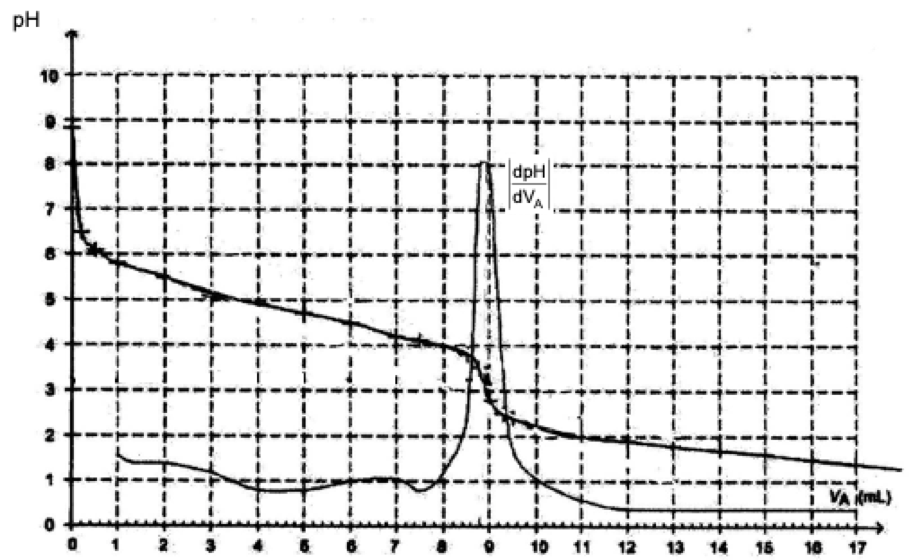

La neige tombe, les mains commencent à s’engourdir et le refuge est encore loin. Le randonneur sort alors de son sac à dos une pochette en plastique, remplie d’un liquide transparent et appuie sur un petit disque métallique placé à l’intérieur : le liquide commence à se solidifier tout en dégageant une douce chaleur.
Ce dispositif nommé chaufferette chimique est constitué d’une enveloppe souple de plastique qui contient une solution aqueuse d’acétate de sodium à 20 % en masse minimum. La solidification s’amorce à partir du disque, localement la solution s’échauffe. L’énergie qu’il a fallu fournir au matériau pour le faire fondre est restituée […]. Après utilisation, on peut régénérer la chaufferette en faisant fondre le solide obtenu par chauffage. On laisse alors le matériau doucement refroidir…
Pour la Science (2008)
Après l’étude d’une solution d’éthanoate de sodium (ou acétate de sodium), on se propose de vérifier par un titrage pH-métrique que la solution contenue dans une chaufferette chimique est une solution saturée en éthanoate de sodium.
Données :
- Produit ionique de l’eau : $Ke = [\ce{H3O^+}] \cdot [\ce{HO^-}] = \pu{1,0e-14}$ à $\pu{25 °C}$ ;
- Masse molaire de l’éthanoate de sodium : $M(\ce{CH3COONa}) = \pu{82,0 g.mol-1}$ ;
- La solubilité notée s d’une espèce chimique exprimée en $\pu{g.L-1}$ est la masse maximale de cette espèce que l’on peut dissoudre dans un litre de solution à une température donnée ;
- Solubilité de l’éthanoate de sodium dans l’eau à $\pu{25 °C}$ : $s = \pu{365 g.L-1}$ soit $\pu{4,5 mol.L-1}$.
Étude d’une solution aqueuse d’éthanoate de sodium
L’éthanoate de sodium $\ce{CH3COONa}$ est un solide blanc. En solution aqueuse, l’éthanoate de sodium se dissocie $$\ce{CH3COONa(s) ->[eau] CH3COO^-(aq) + Na^+(aq) }$$
-
Justifier, en s’appuyant sur la représentation de Lewis de l’ion, que l’ion éthanoate est une base selon Brönsted.
En déduire le couple acido-basique correspondant. -
Écrire l’équation de la réaction chimique entre l’ion éthanoate $\ce{CH3COO^-(aq)}$ et l’eau.
Lorsqu’on introduit dans un bécher un volume $V = \pu{100 mL}$ d’une solution $S$ d’éthanoate de sodium dont la quantité de matière en soluté apporté est $n = \pu{1,0e-2 mol}$, le pH mesuré de cette solution $S$ est égal à $\pu{8,9}$.
-
Construire le tableau d’avancement de cette réaction en utilisant la quantité de matière $n$ et l’avancement $x$ de la réaction.
-
Calculer la concentration $[\ce{H3O^+}]$ en ions oxonium $\ce{H3O^+}$ à l’équilibre dans la solution.
En déduire la valeur de la concentration en ions hydroxyde à l’équilibre $[\ce{HO^-}]$, à la température de $\pu{25 °C}$. -
Pour la solution préparée, calculer l’avancement à l’équilibre $x_{eq}$.
-
La transformation chimique est-elle totale ?
Titrage de la solution d’éthanoate de sodium contenue dans une chaufferette chimique
Une chaufferette chimique contient une solution aqueuse $S_0$ d’éthanoate de sodium $(\ce{Na^+ + CH3COO^-})$. La solution a un volume $V_0 = \pu{100 mL}$ et une masse $m = \pu{130 g}$.
La solution $S_0$ contenue dans la chaufferette chimique étant trop concentrée pour être dosée directement au laboratoire, on prépare une solution $S_1$ en diluant 100 fois le contenu de la chaufferette chimique.
Pour déterminer la concentration molaire $C_0$ en éthanoate de sodium apporté dans une chaufferette chimique, on place dans un bécher un volume $V_1 = \pu{25,0 mL}$ de solution $S_1$ à titrer.
On réalise le titrage avec suivi pH-métrique de la solution $S_1$ par une solution d’acide chlorhydrique $(\ce{H3O^+ + Cl^-(aq)})$ de concentration $C_A = \pu{2,0e-1 mol.L-1}$. On note $V_A$ le volume de la solution d’acide chlorhydrique versé.
- Écrire l’équation de la réaction chimique support de ce titrage.
On obtient les courbes de la figure 5 ci-dessous :

Remarque : Image à télécharger
-
Schématiser et légender le dispositif de titrage.
-
Donner la définition de l’équivalence d’un titrage.
-
Écrire la relation entre la quantité de matière d’ions éthanoate $n_i(\ce{CH3COO^-})$ présente initialement dans le bécher et la quantité de matière d’ions oxonium $n_E(\ce{H3O^+})$, qui permet d’atteindre cette équivalence. On pourra éventuellement s’aider d’un tableau d’avancement.
-
Déterminer le volume à l’équivalence $V_E$ en expliquant la méthode utilisée.
-
Calculer la concentration $C_1$ en ions éthanoate de la solution dosée.
-
Calculer la concentration $C_0$ en éthanoate de sodium apporté dans la solution contenue dans la chaufferette. La solution d’éthanoate de sodium contenue dans la chaufferette est-elle saturée ?
-
Calculer la masse d’éthanoate de sodium dans la chaufferette.
-
La solution aqueuse de masse $\pu{130 g}$ contenue dans la chaufferette est-elle au moins à 20 % en masse d’éthanoate de sodium comme l’indique le texte introductif ?